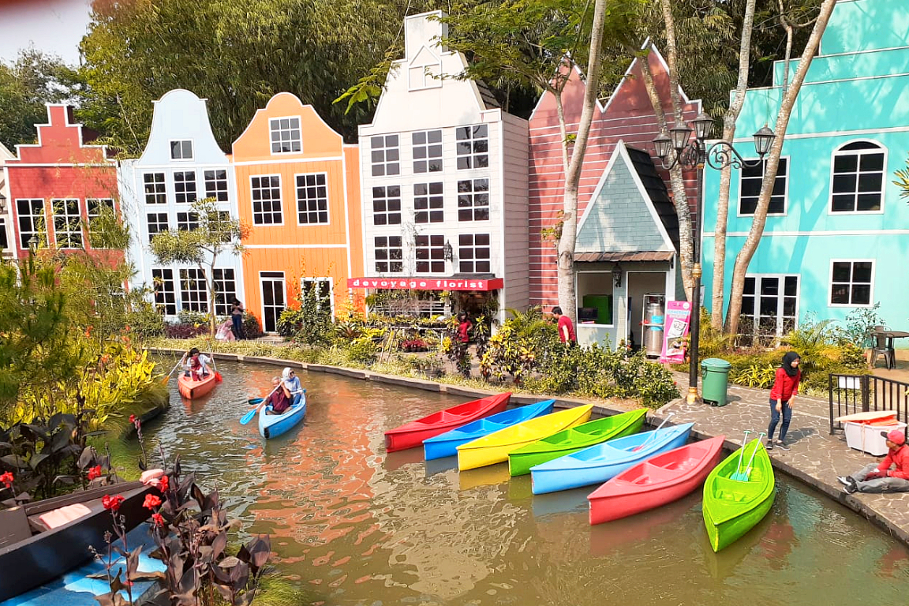

Galerry
1.Leuwi Lieuk


Gambar - gambar ini merupakan beberapa potret yang diambil pada wisata Leuwi Lieuk.
| Keterangan | |
|---|---|
| Nama | Tempat wisata yang tidak kalah kerennya dari Green Canyon Pangandaran dan Angel's Billabong Bali ternyata ada juga versi Bogornya. Yaitu tempat wisata Leuwi Lieuk. Kamu bisa menikmati keindahan alam sungai hijau pirus di sana. Walaupun untuk bisa mencapai ke sana, kamu harus berenang dari Leuwi Cepet, lalu trekking selama 5 menit. Namun, tentu pemandangan di sana tidak akan membuat kamu kecewa. |
| Lokasi | Leuwi Lieuk berlokasi di Kampung Wangun, Cileungsi, Karang Tengah. |
2.Jungleland Adventure Theme Park

Gambar - gambar ini merupakan beberapa potret yang diambil pada wisata Jungleland Adventure Theme Park.
| Keterangan | |
|---|---|
| Nama | Jika Anda menyukai wisata permainan seperti Dufan, datanglah Jungleland Adventure Theme Park. Tempat wisata satu ini merupakan Dufan-nya Bogor. Di sini, Anda bisa menikmati 31 wahana permainan yang tidak mungkin membuat kamu bosan. Wahana permainan yang dibangun di lahan seluas 35 hektar. |
| Lokasi | Kawasan Sentul Nirwana, Jalan Jungle Land No. 1, Karang Tengah, Kabupaten Bogor, Jawa Barat. |
3.De Voyage

Gambar - gambar ini merupakan beberapa potret yang diambil pada wisata De Voyage.
| Keterangan | |
|---|---|
| Nama | Menikmati suasana Eropa di Bogor? Bisa dong! Tempat wisata di Bogor bernama De Voyage menawarkan wisata ala Eropa di tengah kota Bogor. Di sana terdapat replika menara Eiffel, kalan-kanal berkelok ala Venesia dan Bryggen mini. De Voyage juga menawarkan banyak spot foto yang menarik. |
| Lokasi | Jalan Boulevard Bogor Nirwana Residence Mulyaharja, Bogor Selatan. |
4.Little Venice
Gambar - gambar ini merupakan beberapa potret yang diambil pada wisata Little Venice.
| Keterangan | |
|---|---|
| Nama | Selain De Voyage, ternyata Bogor punya tempat wisata yang mengusung tema Eropa lain. Di Little Venice, Anda bisa menaiki wahana sampan layaknya seperti di Venesia, Italia. Pengunjung bisa menikmati pemandangan kota yang didesain ala-ala Italia. |
| Lokasi | J Batulawang, Kecamatan Cipanas, Kabupaten Cianjur, Jawa Barat. |
5.Curug Ciherang & Jembatan Kayu Gantung


Gambar - gambar ini merupakan beberapa potret yang diambil pada wisata Curug Ciherang & Jembatan Kayu Gantung.
| Keterangan | |
|---|---|
| Nama | Di tempat wisata Curug Ciherang, selain pemandangan curug yang menawan, kamu juga bisa melihat gardu pandang di ketinggian bukit dengan pemandangan alam yang indah dan tidak ternilai. Pengunjung bisa menikmati keindahan alam melalui rumah pohon dan jembatan kayu gantung. Kamu bisa menikmati air terjun Ciherang dengan ketinggian 30 meter. |
| Lokasi | J Desa Wargajaya, Kecamatan Sukamakmur, Bogor, Jawa Barat. |
6. Bukit Alesano
Gambar - gambar ini merupakan beberapa potret yang diambil pada wisata Bukit Alesano.
| Keterangan | |
|---|---|
| Nama | Bukit Alesano adalah bukit bintang versi Bogor yang menawarkan sensasi berkemah di ketinggian bukit dengan dikelilingi pemandangan kota Bogor yang indah di malam hari. Tak kalah menakjubkan, pengunjung juga bisa menikmati matahari terbit dengan pemandangan Gunung Salak dan Gunung Pangrango yang terlihat sangat cantik dari atas bukit Alesano. |
| Lokasi | J Desa Cijeruk, Kabupaten Bogor. |